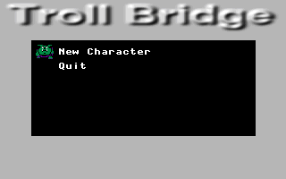
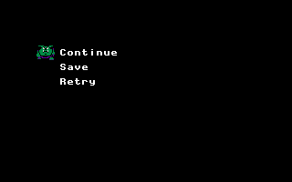

![[Troll Bridge]](title.gif)
 When initial starting the game you have the option of creating a new character or quiting the game. If there where any created characters you would be allowed to load them as well. When the list of characters cannot fit on one screen an arrow will appear at the bottom right indicating that there are more names. The up and down directions will change the selected option. Start selects the option.
 To create a new character you must enter the character's name. Names
are limited to eight characters. The direction pad move the gray
brackets. The A button adds the character. The B button deletes the
last character. Once a suitable name is select simply press start.
Note: If you chose the same name as a saved character, the saved
character will be loaded. Because of the Dos filesystem under Dos
character names are not case sensitive (i.e "GeoRGe" is the same as
"george").
To create a new character you must enter the character's name. Names
are limited to eight characters. The direction pad move the gray
brackets. The A button adds the character. The B button deletes the
last character. Once a suitable name is select simply press start.
Note: If you chose the same name as a saved character, the saved
character will be loaded. Because of the Dos filesystem under Dos
character names are not case sensitive (i.e "GeoRGe" is the same as
"george").
 When your character dies you presented with several options. Continue allows you to continue the game with whatever items you had acquired. Save stores your character on disk. Retry throws out all items you had acquired and returns to the starting screen.
At present Troll Bridge does not have an option for removing characters. This is planned for the future. Save files are the character's name plus the extention "trs". To work around the problem you can simply delete the appropriate file from a command line or file manager.